Getting Started with the ICTK ZWG3M
Overview
This tutorial contains instructions for the following getting started steps:
Connecting your board to a host machine.
Download tool and script to the host machine for installing applications.
Loading the application binary image to your board, and then run the application.
Configure Wi-Fi and application specific settings on your board to run FreeRTOS demo.
Prerequisites
Before you get started with FreeRTOS on your ZWG3M, you need to set up your AWS account and permissions.
To create an AWS account, see Create and Activate an AWS Account.
To add an IAM user to your AWS account, see IAM User Guide. To grant your IAM user account access to AWS IoT and FreeRTOS, attach the following IAM policies to your IAM user account:
AmazonFreeRTOSFullAccess
AWSIoTFullAccess
To attach the AmazonFreeRTOSFullAccess policy to your IAM user
Browse to the IAM console, and from the navigation pane, choose Users.
Enter your user name in the search text box, and then choose it from the list.
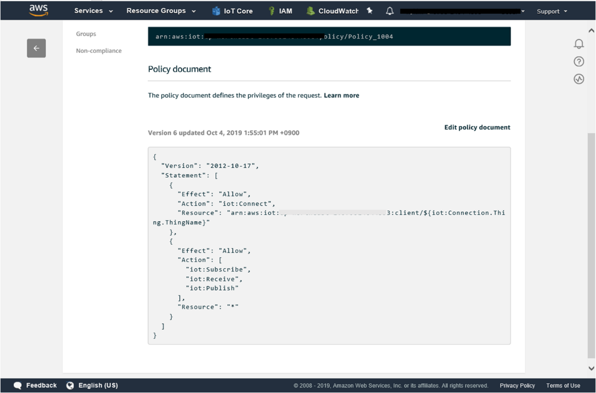
Choose Add permissions.
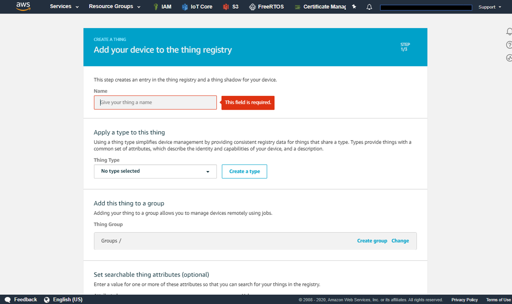
Choose Attach existing policies directly.
In the search box, enter AmazonFreeRTOSFullAccess, choose it from the list, and then choose Next: Review.
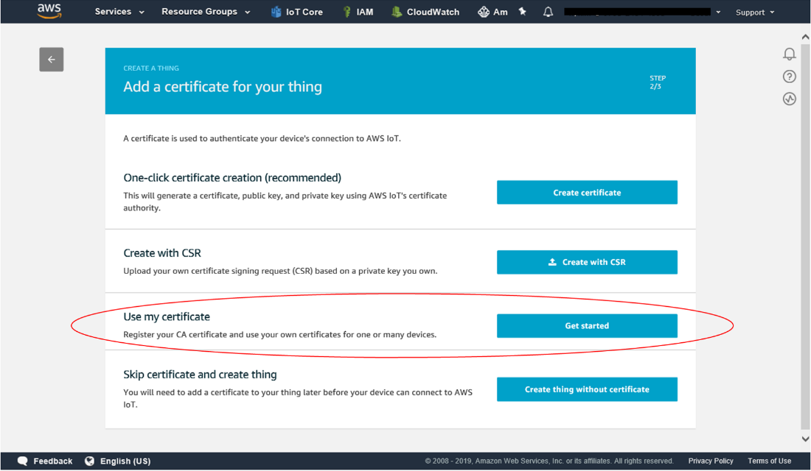
Choose Add permissions.
To attach the AWSIoTFullAccess policy to your IAM user
Browse to the IAM console, and from the navigation pane, choose Users.
Enter your user name in the search text box, and then choose it from the list.
Choose Add permissions.
Choose Attach existing policies directly.
In the search box, enter AWSIoTFullAccess, choose it from the list, and then choose Next: Review.
Choose Add permissions.
For more information about IAM and user accounts, see IAM User Guide.
For more information about policies, see IAM Permissions and Policies.
Set Up the ZWG3M Hardware
Connect your host computer to ZWG3M
Connect the J1 UART connector using FT232 USB UART
Connect J6 using USB UART to send and receive AT command messages during operation.
Ensure the UART_DL(JP3) is set to low and JP1 = H_BOOT for download mode.
Set Up Your Development Environment
To communicate with your board, you need to download and install a firmware and configure board with AT command
Download and install Flash tool (MTK lab) and firmware
To set up your environment, please download IoT Flashtool for MT7686. Install them on your host computer.
Download the latest firmware along with build application for your convenience. Re-locate or copy these four files in the IoT Flashtool folder you downloaded above.
zwg3m_flash.bat
Flash_download.cfg
aws_demos.bin
mt768X_default_PerRate_TxPwr.bin
Modify zwg3m_flash.bat and flash_donwload.cfg with the correct path.
• zwg3m_flash.bat
set comport=COMXX
set pathexe=XXXXXX \IoT_Flash_Tool_Windows\coda.exe
set param1=XXXX \IoT_Flash_Tool_Windows\flash_download.cfg --UART %comport% -f -d --reset
• flash_download.cfg
Set the correct path for aws_demos.bin (demo) & mt768x_default_PerRate_TxPwr.bin
Run zwg3m_flash.bat
When you see the message below, press the reset button for download firmware.

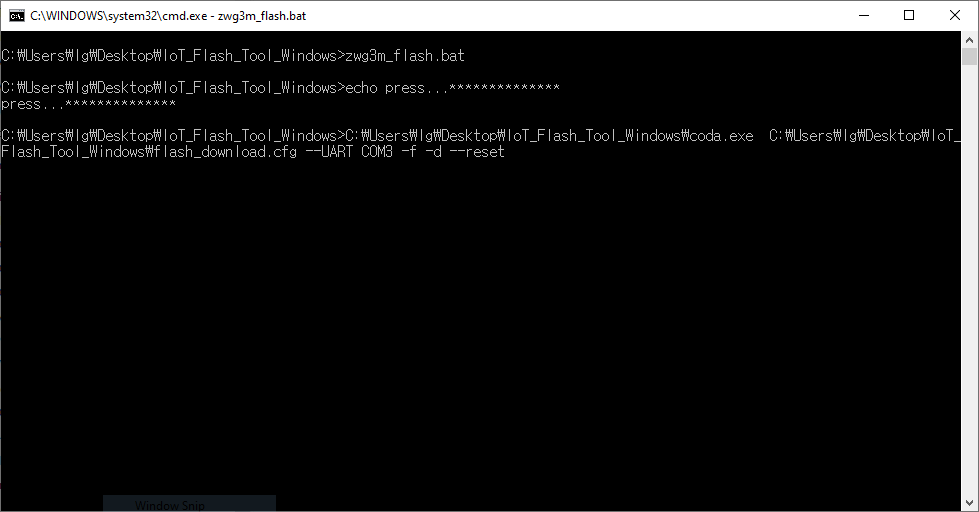
Configure ZWG3M board for FreeRTOS demo project
* Implementation
is based on MQTT version 3.1.1 and TLS 1.2 with
ECDHE_ECDSA_WITH_AES_128_GCM_SHA256 ciphersuite.
* private key and
certificates are encrypted in HW-based security chip, supports
enhanced secured working structure.
* ZWG3M provides TRNG(True Random Number Generator) for best security. When the MCU performs TRNG Read through I/O ports, it reads 32-bit value.
Prerequisites
• CA certificate
• A client certificate
• A client private key
ZWG3M support ECC but not RSA. Please prepare your own ECC certificate and key to connect AWS IoT. Please use this guide to create your own ECC certificates : Create ECC certificate guide
Connect to AWS IoT Core
Log in to the AWS Management Console
Choose
 IoT Core service
IoT Core service
In the left navigation pane, click on Manage/Things
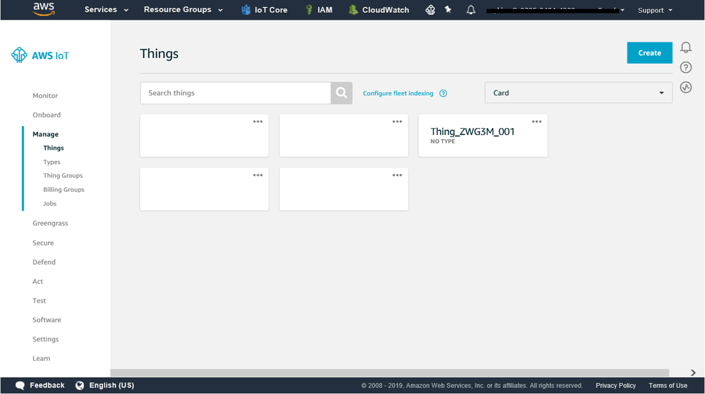

On the Certificate page, choose Use my certificate.
Select or register CA for your own certificate to register
For CA register, refer to
https://docs.aws.amazon.com/iot/latest/developerguide/register-CA-cert.html
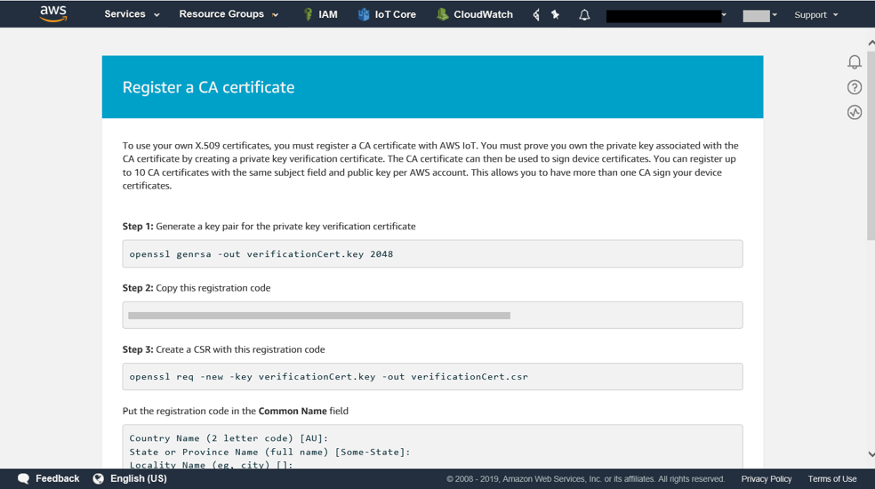
Upload your own certificate
To Register your certificate, refer to
https://docs.aws.amazon.com/iot/latest/developerguide/manual-cert-registration.html
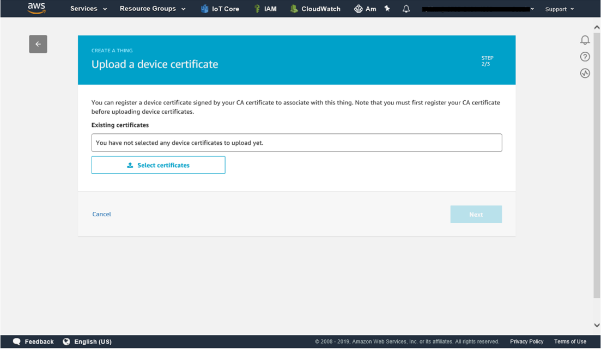
In the left navigation pane, choose Policies under Secure menu
Click on the Create button and define a policy. The specific permission policies can vary for your use cases. For non-dev environments, all devices in your fleet must have credentials with privileges that authorize intended actions only, which include (but not limited to) AWS IoT MQTT actions such as publishing messages or subscribing to topics with specific scope and context. Identify the permission policies that best meet your business and security requirements.
For sample policies, refer to https://docs.aws.amazon.com/iot/latest/developerguide/example-iot-policies.html. Also refer to https://docs.aws.amazon.com/iot/latest/developerguide/security-best-practices.html.

< policy statements>
{
"Version": "2012-10-17",
"Statement": [
{
"Effect": "Allow",
"Action": "iot:Connect",
"Resource":
"arn:aws:iot:XXXXX:client/${iot:Connection.Thing.ThingName}"
},
{
"Effect": "Allow",
"Action": [
"iot:Subscribe",
"iot:Receive",
"iot:Publish"
"Resource": “*”
}
]
}
Go to the certificates page, click on the three dots of your certificate and attach the policy to the certificate
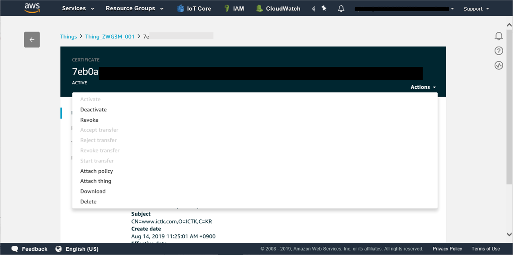
Setting up the ZWG3M device
This Python scripts allow users to set Wi-Fi information and application specific settings in order to connect the board with the AWS IoT.
Download all python scripts from the ICTK GitHub repository to a zwg3m-py folder.
Use this guide to provision the certificate to ZWG3M: getting started-provisioning certificate guide
Modify wifi.json and aws.json files according to your settings.
Please have your host URL, thing name and client ID ready to configure your device. Use port num as 8883 for secure-MQTT protocol.
User can find aws_host_url from the AWS Management Console. Go to IoT core and click the settings at the left pane. Please make a copy of the Endpoint and use them as aws_host_url.
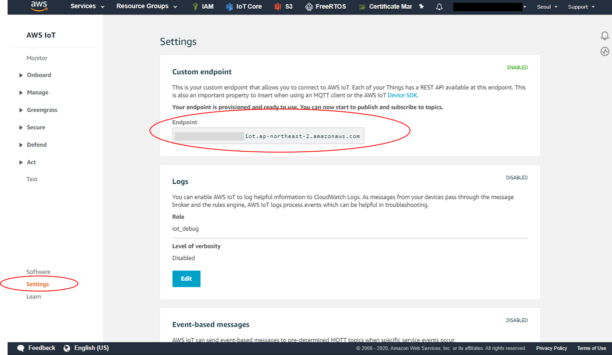
wifi.json
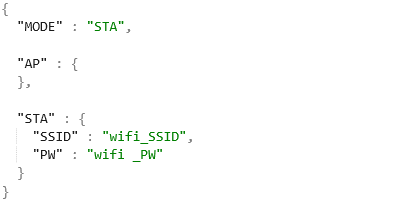
aws.json
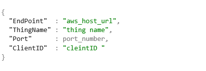
Run zwg3m_configuration.py to configure settings of your device.
Available port will be shown in windows. Once user selects the port for the ZWG3M, it will be stored in json file name 'zwg3m.json’.
configuration process

Wi-Fi and AWS setting that was written on json files will be configured. Please reset the board after the configuration.
Monitoring MQTT messages on the Cloud
You can use the MQTT client in the AWS IoT console to monitor the messages that your device sends to the AWS Cloud.
To subscribe to the MQTT topic with the AWS IoT MQTT client
Sign in to the AWS IoT console.
In the navigation pane, choose Test to open the MQTT client.
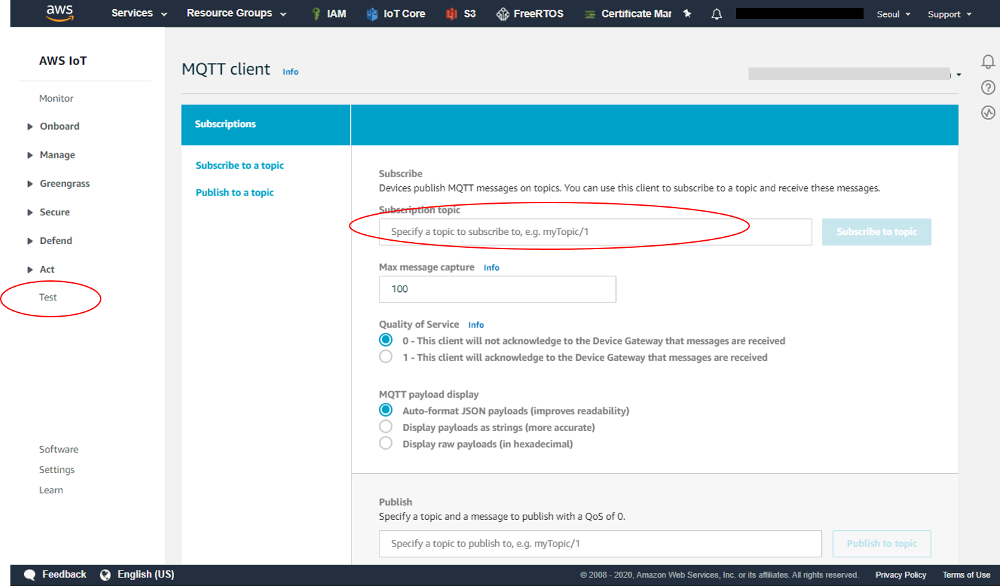
In Subscription topic enter iotdemo/topic/#, select "Display Payloads as Strings" and then click Subscribe to topic. A ‘#’ symbol at the end of a topic name acts as wildcard. i.e.
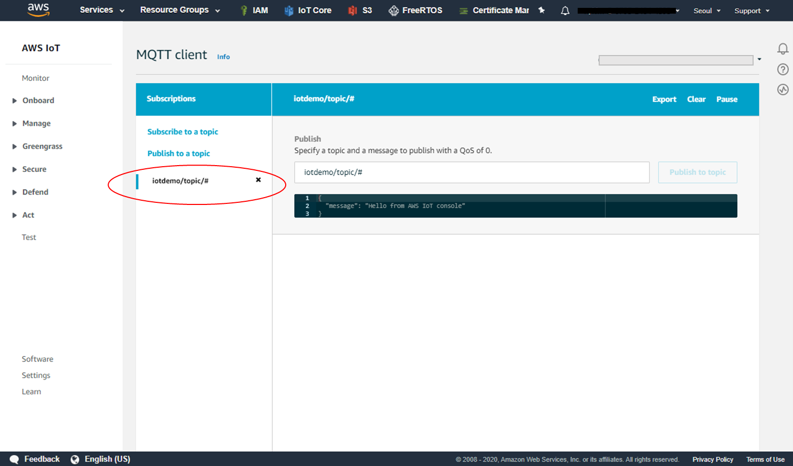
Press the reset button on ZWG3M to start the demo. MQTT messages appear on the iotdemo/topic/# as below.
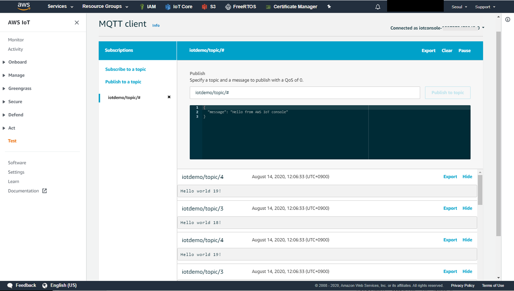
Troubleshooting
Download fail
If you encounter errors while downloading firmware, check the comport number and path in zwg3m_flash.bat and flash_download.cfg.
Ensure the UART_DL(JP3) is set to low and JP1 = H_BOOT for download mode.
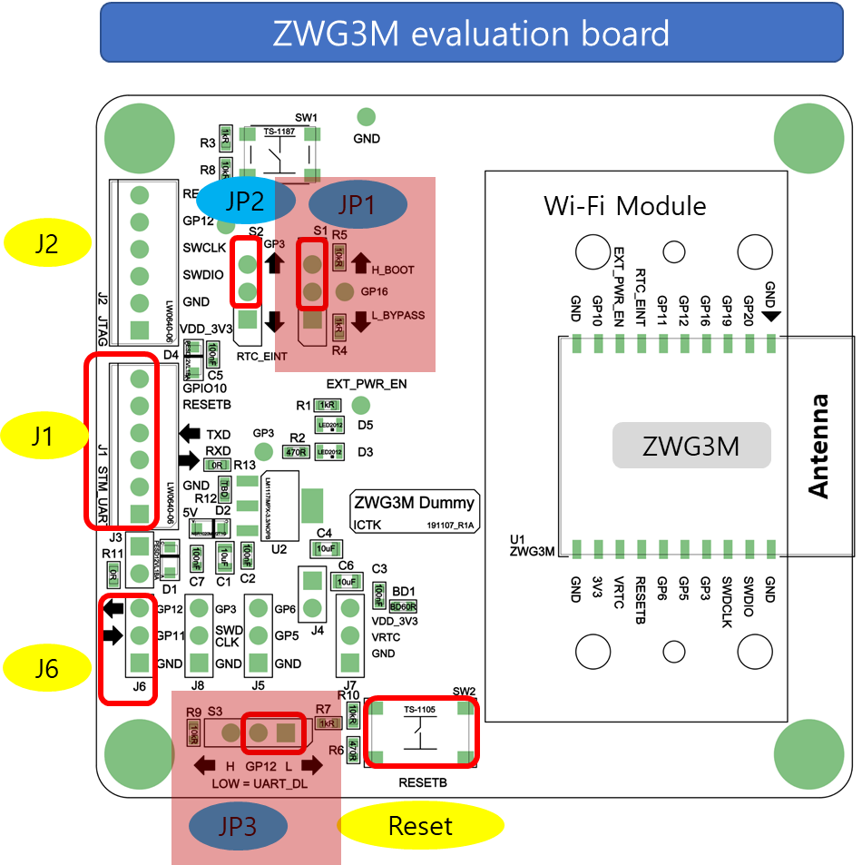
Connection fail
Be sure to configure AWS IoT and your FreeRTOS download to connect your device to the AWS Cloud. You can use below steps to check the device settings.
Connect the device with host computer
Open terminal program (ex. hterm)
Check settings using AT command set . Make sure all the configurations are set correctly.
ex) AT+AWS_EP ? +AWS_EP: your_host_url
AT+AWS_TN? +AWS_TN: your thing name
AT+WIFI_SSID_STA? +WIFI_SSID_STA : your Wi-Fi ID
AT+WIFI_PW_STA? +WIFI_PW_STA : your Wi-Fi password
For general troubleshooting information about Getting Started with FreeRTOS, see Troubleshooting getting started.
If these steps don’t work, please contact zn@ictk.com.